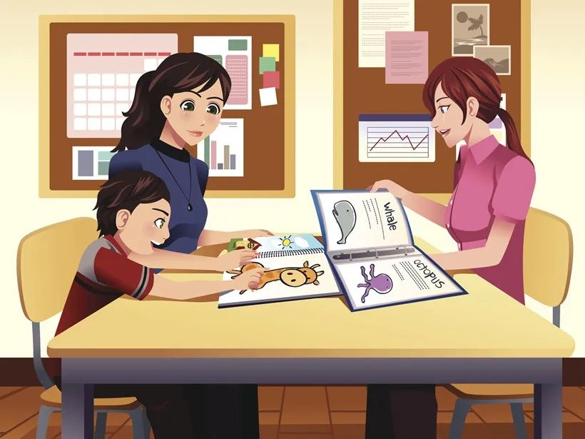

Every child.
One voice.
The mission of the Iowa PTA is to make every child's potential a reality by engaging and empowering families and communities to advocate for all children.
A statewide voice for Iowa's children
The Iowa Congress of Parents and Teachers (Iowa PTA) is a member of the National PTA. It is a membership association with more than 4,000 members, and over 130 local units.
Operating from Cedar Rapids under Executive Director Gretchen Paricka, with an elected board and appointed chairs, Iowa PTA hosts an annual statewide convention and a fall leadership conference focused on training leaders and advocating for child health, education, and safety.

Your to-do list
Tools for PTA leaders
Can’t find a form you need?
Let us know and we will add it to this list. Questions? We are here to help – contact us today!
info@iowapta.org 319-981-5210 Forms for LeadersPrograms that put kids first

Speaking up for every child
A core principle of Iowa PTA's mission is to promote the safety and wellbeing of all children. We advocate for improving public education and for protecting public funding.
Iowa PTA opposes voucher systems and works to guarantee that public funds are not diverted to any private school choice proposal and/or voucher system.
Take action